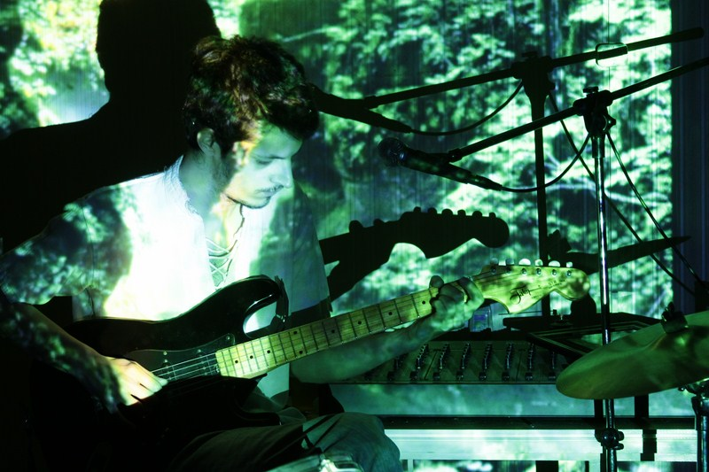
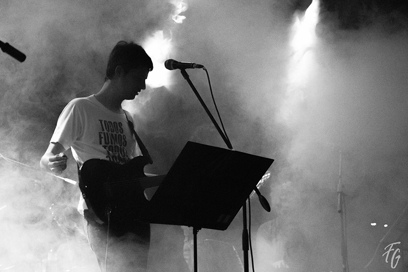

Proveniente de una familia relacionada a la música y el arte en general, que ha desarrollado en él una sensibilidad hacia distintas temáticas artísticas y sociales, comenzó a la temprana edad de 10 años como baterista en una banda de su escuela primaria y ampliando con el tiempo sus experiencias en distintos grupos musicales, así como también formándose en la utilización de herramientas de producción musical y audiovisual tanto para sesiones de estudio como para presentaciones en directo.
Entre 2006 y 2008 formó parte de una banda nombrada "Izzy Rock" como guitarrista y cantante principal, en la cual escribió y presentó sus primeras obras en distintos bares y pubs de Buenos Aires, llegando a ser partícipes del festival "Zarate Tedeum Rock" compartiendo escenario con bandas de renombre, como Guasones, Carajo, Bulldog, Cadena Perpetua, y muchos más.
En 2015 edita de forma independiente su primer LP titulado "D.A.M.P." donde florecen sus influencias más cercanas en el género del Rock Canción, y su lírica más introspectiva.
Para 2017, y en paralelo a su proyecto solista, se integró como tecladista de "Viejo Bluesman", banda oriunda del sur del Gran Buenos Aires con la cual participó del festival "Bera Rock" de ese mismo año y compartiendo una vez más escenario con artistas de renombre.
Durante los últimos años y hasta la actualidad el proyecto se ha extendido hacia el arte audiovisual, produciendo así sus primeros videoclips titulados "Dentro de tu vista" y "Tontos en la orilla", dejando de lado de forma provisoria las presentaciones en vivo de su material.